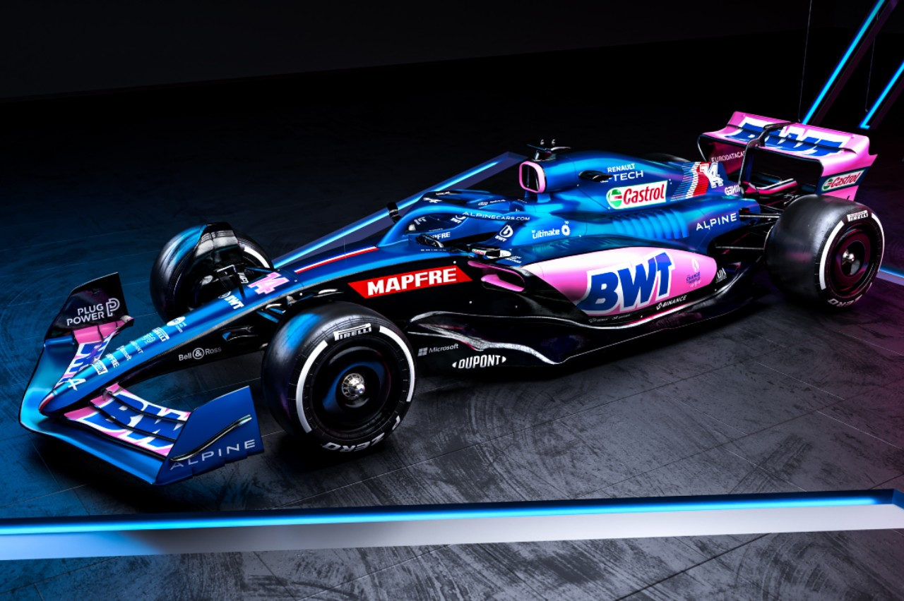

Fernando Alonso
DRIVER PRESENTATION

Fernando Alonso
Virtuosismo Técnico y Legado Histórico de Fernando Alonso en su Regreso a la Fórmula 1
Fernando Alonso inició su formación en el karting español (1984), estableciendo una base técnica insuperable que lo llevó a debutar en F1 con Minardi en 2001. Su ascenso con Renault cambió la historia del deporte al destronar a Michael Schumacher y obtener dos títulos mundiales consecutivos (2005-2006). Tras etapas icónicas en McLaren y Ferrari, donde demostró ser capaz de llevar cualquier monoplaza más allá de sus límites teóricos, Alonso se tomó un receso de la categoría para conquistar las 24 Horas de Le Mans y el Mundial de Resistencia. Su regreso en 2021 con Alpine (antes Renault) marcó un hito de longevidad y vigencia competitiva, demostrando en circuitos como Hungría una lectura estratégica y defensiva superior. Con más de 30 victorias y 100 podios, Alonso personifica la inteligencia táctica y la pasión incombustible por la perfección técnica en pista.
MOMENTOS DESTACADOS

Bicampeón Mundial
2005-2006: Alonso destrona a Schumacher logrando dos títulos consecutivos con Renault y cambiando la historia de la F1.

Maestro de la Defensa
Hungría 2021: Una exhibición defensiva ante Hamilton que fue clave para la victoria de su compañero Ocon, demostrando su vigencia.
El Regreso al Podio
Qatar 2021: Alonso vuelve al podio después de años, confirmando que "El Plan" de su regreso estaba más vivo que nunca.